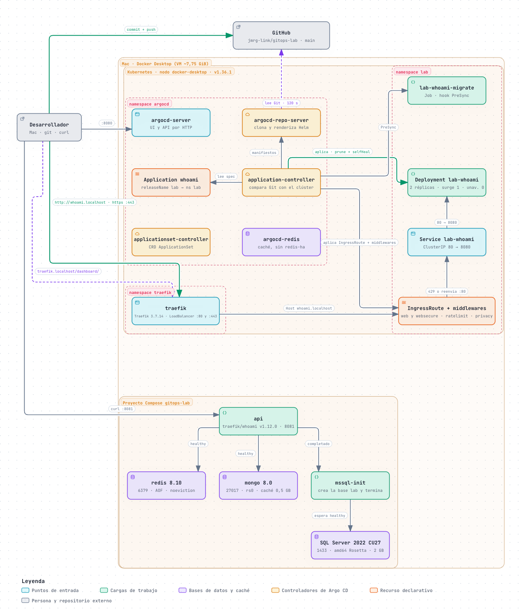
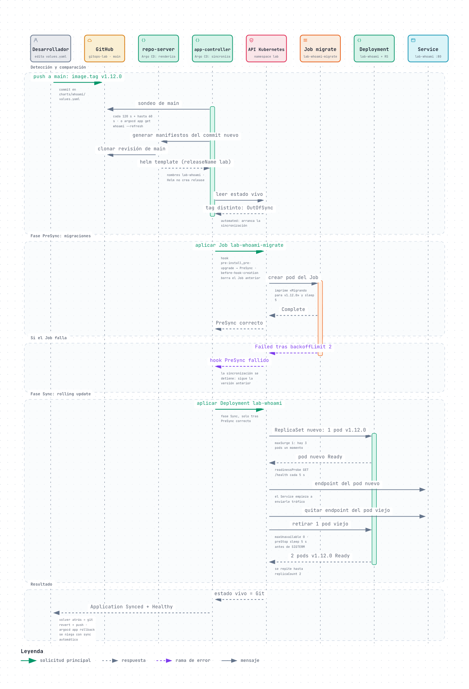
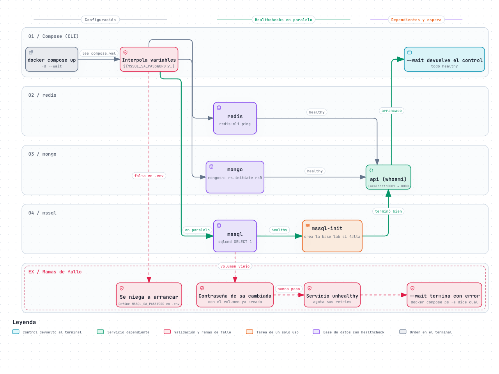
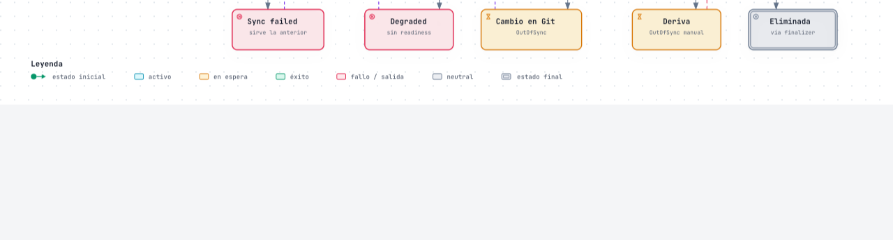
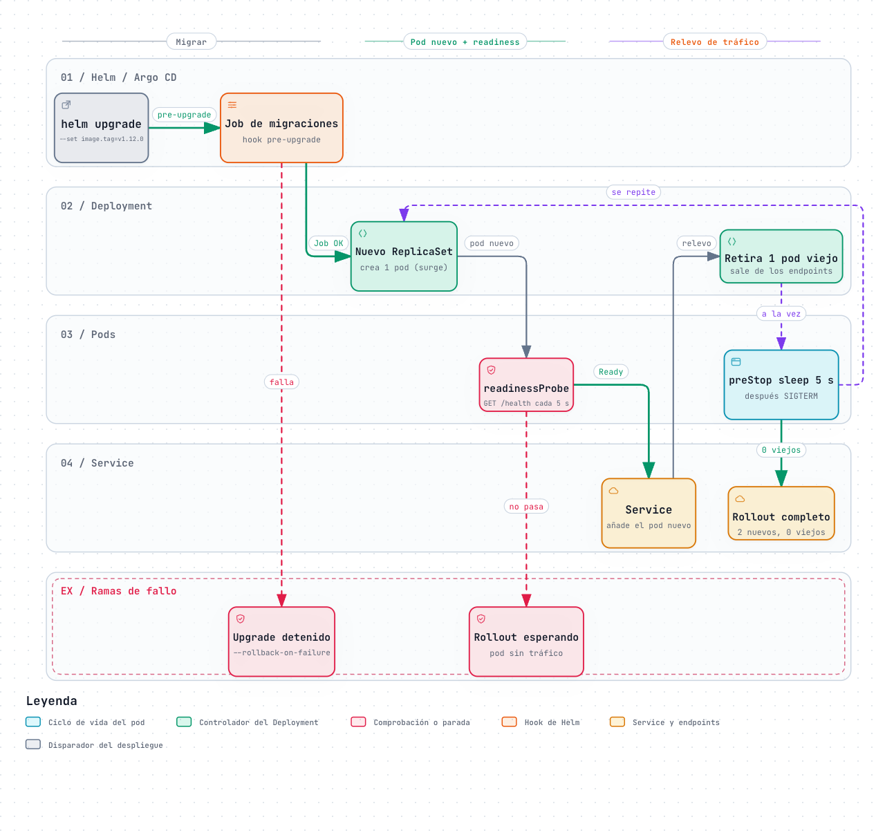

01Arquitectura del laboratorio
Compose, Traefik como puerta de entrada en localhost:80 y :443, Argo CD y el repositorio del que lee el chart.

02De un commit a los pods nuevos
Sondeo, renderizado con Helm, migraciones en PreSync y rolling update en Sync.

03Arranque de Compose
Healthchecks en paralelo, la tarea de inicialización y la API esperando a que todo esté listo.

04Ciclo de vida de la Application
Sincronización, deriva y selfHeal, fallos de migración o readiness y borrado con finalizer.

05Rolling update sin pérdida de servicio
maxSurge 1 y maxUnavailable 0: readiness antes del relevo y preStop antes de SIGTERM.